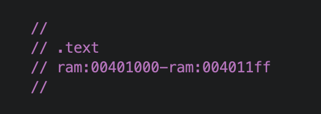

The binary is a 32-bit x86 PE. The .text section is 512 bytes, of which 296 are actual code. The .data section holds three strings.

The program has three strings in .data. At first I assumed all three were output messages. Nothing in the data itself says which is which.
The role comes from the consumer. I checked which API receives each string. Two of them are pushed to MessageBoxA, so they are output text. The third one is pushed to lstrcmpA, so it is the value the input is compared against.
The imports made this easy to locate: GetDlgItemTextA reads the input field, lstrcmpA compares strings.
CALL USER32.DLL::GetDlgItemTextA ; four parameters, the third is the destination buffer
--------------------------
LEA EAX,[EBP + 0xfffffefc]
PUSH EAX ; the same buffer, so it holds the user input
--------------------------
PUSH s_SuperPass_00403000 ; the input is compared against this stringSo s_SuperPass_00403000 holds the password.
SuperPassThe useful part was not the answer but the method. Data has no meaning on its own: three strings look identical in the listing, and only the API that consumes each one reveals its role. This was also my first practice with Ghidra: following cross-references, renaming variables, and reading Windows API calls.
← all writeups